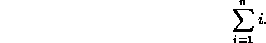
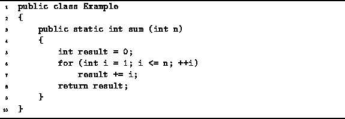
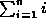
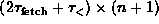
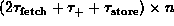
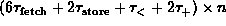
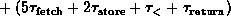
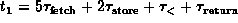
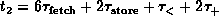

Data Structures and Algorithms
with Object-Oriented Design Patterns in Java
Data Structures and Algorithms
with Object-Oriented Design Patterns in Java
In this section we apply Axioms  , and
to the analysis of the running time of a program to compute the following
simple arithmetic series summation
, and
to the analysis of the running time of a program to compute the following
simple arithmetic series summation

The algorithm to compute this summation is given in Program .

Program: Program to compute .
The executable statements in Program
comprise lines 5-8.
Table gives the running times of each of these statements.
| statement | time | code |
| 5 | | result = 0 |
| 6a | | i = 1 |
| 6b |  | i <= n |
| 6c |  | ++i |
| 7 | result += i | |
| 8 | | return result |
| TOTAL |  | |
|  |
Note that the for statement on line 6 of Program
has been split across three lines in Table .
This is because we analyze the running time of each of the elements
of a for statement separately.
The first element, the initialization code,
is executed once before the first iteration of the loop.
The second element, the loop termination test,
is executed before each iteration of the loop begins.
Altogether, the number of times the termination test is executed
is one more than the number of times the loop body is executed.
Finally, the third element, the loop counter increment step,
is executed once per loop iteration.
Summing the entries in Table
we get that the running time, T(n),
of Program is
where  and .
 Copyright © 1998 by Bruno R. Preiss, P.Eng. All rights reserved.
Copyright © 1998 by Bruno R. Preiss, P.Eng. All rights reserved.